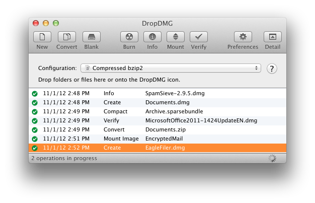

4.3.2 Show All Log Entries/Errors Only
These commands control whether the log in the DropDMG window shows every log entry (including successfully completed operations) or just the log entries for operations that failed with an error or were canceled.

